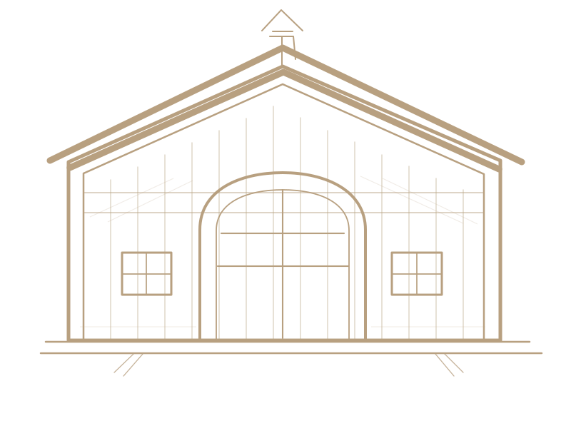

TRADITIONAL CIDER APPLES ✳ ESTATE GROWN ✳ PRESSED ON THE FARM ✳ TRADITIONAL CIDER APPLES ✳ ESTATE GROWN
Our bottlings / 2026 release
The ciders.
Our orchard makes a handful of distinct ciders each year. Always dry or off-dry, never sweet. Each bottling reflects its particular blend and harvest.
01 / 2026 Release2025 Harvest
Rosalie
I
Dry8.0% alc/vol
Structured and full-flavored, with firm tannins, bright acidity, a suggestion of richness, and a pleasantly grippy finish.
Apple varieties
St. Martin · Porter’s Perfection · Redfield
02 / 2026 Release2025 Harvest
Lucie
II
Dry8.2% alc/vol
Bright and aromatic, with fragrant orchard-fruit character, lively acidity, and a crisp, persistent finish.
Apple varieties
Northern Spy · Wickson · Liberty · Wild Crabapple
From the cellar / 2025 release
Babette
2024 Harvest
A blend of traditional French cider apples, with Dabinett at its core. Bone dry and produced entirely from estate-grown fruit.
Bone Dry8.4% alc/vol750 mL
01 / The orchard
Apples grown for cider.
We grow traditional French, English, and American cider varieties chosen for the tannin, acidity, and character they bring to the finished cider. They are grown with minimal intervention, and without irrigation - to concentrate the true character of the fruit
Harrison · Golden Russet · Northern Spy · Arkansas Black · Stayman · King David
Selected varieties from our orchard

MONTGOMERY, NEW YORK · U.S.A.
02 / The ciderhouse
From orchard to bottle.
The farmhouse dates to the 1700s. Once a dairy farm, the property is now home to our small ciderhouse in a converted barn.
Everything happens here—from growing and harvesting the apples to pressing, fermentation, and bottling. Inspired by the farmhouse ciders of Normandy, ours tend to be stronger and drier, generally around 8% alcohol.